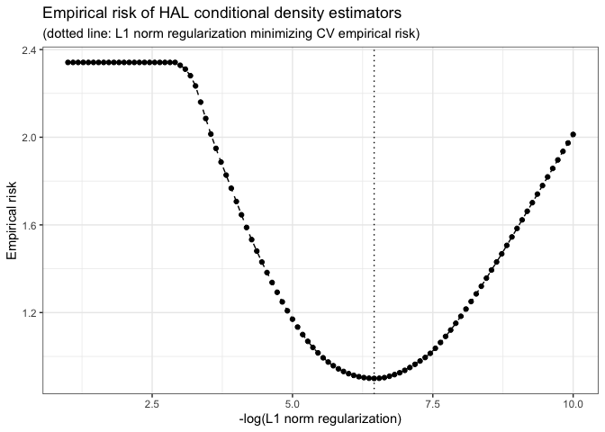

Highly Adaptive Lasso Conditional Density Estimation
Authors: Nima Hejazi, David Benkeser, and Mark van der Laan
What’s haldensify?
The haldensify R package is designed to provide facilities for nonparametric conditional density estimation based on a flexible procedure proposed initially by Dı́az and van der Laan (2011). The core of the implemented methodology involves recovering conditional density estimates by performing pooled hazards regressions so as to assess the conditional hazard that an observed value falls in a given bin over the (conditional) support of the variable of interest. Such conditional density estimates are useful, for example, in causal inference problems in which the generalized propensity score (for continuous-valued exposures) must be estimated (Dı́az and van der Laan 2012, 2018; Dı́az and Hejazi 2020). haldensify implements this conditional density estimation strategy for use only with the highly adaptive lasso (HAL) (Benkeser and van der Laan 2016; van der Laan 2017; van der Laan and Benkeser 2018; Coyle et al. 2022; Hejazi, Coyle, and van der Laan 2020). Since the generalized propensity score is a key ingredient in inverse probability weighting (IPW) methods, haldensify builds on the advances of Ertefaie, Hejazi, and van der Laan (2022) and Hejazi et al. (2022) to provide non-parametric IPW estimators of the causal effects for continuous treatments, which achieve the semi-parametric efficiency bound by undersmoothing along a family of HAL conditional density estimators.
Installation
For standard use, we recommend installing the package from CRAN via
install.packages("haldensify")To contribute, install the development version of haldensify from GitHub via remotes:
remotes::install_github("nhejazi/haldensify")Example
A simple example illustrates how haldensify may be used to train a highly adaptive lasso model to obtain conditional density estimates:
library(haldensify)
#> haldensify v0.2.3: Highly Adaptive Lasso Conditional Density Estimation
set.seed(76924)
# simulate data: W ~ U[-4, 4] and A|W ~ N(mu = W, sd = 0.25)
n_train <- 100
w <- runif(n_train, -4, 4)
a <- rnorm(n_train, w, 0.25)
# HAL-based density estimate of A|W
haldensify_fit <- haldensify(
A = a, W = w,
n_bins = 10, grid_type = "equal_range",
lambda_seq = exp(seq(-1, -10, length = 100)),
# arguments passed to hal9001::fit_hal()
max_degree = 3,
reduce_basis = 1 / sqrt(n_train)
)
#> Warning in (function (X, Y, formula = NULL, X_unpenalized = NULL, max_degree = ifelse(ncol(X) >= : Some fit_control arguments are neither default nor glmnet/cv.glmnet arguments: n_folds;
#> They will be removed from fit_control
haldensify_fit
#> HAL Conditional Density Estimation
#> Number of bins over support of A: 10
#> CV-selected lambda: 0.0016
#> Summary of fitted HAL:
#> Warning in summary.hal9001(x$hal_fit): Coefficients for many lambda exist --
#> Summarizing coefficients corresponding to minimum lambda.
#> coef term
#> <num> <char>
#> 1: 5.989688 (Intercept)
#> 2: 10.498800 [ I(bin_id >= 2) ]
#> 3: -9.673620 [ I(W >= -3.353) ]
#> 4: 8.659440 [ I(bin_id >= 6) ]
#> 5: -8.272041 [ I(bin_id >= 2) ] * [ I(W >= -2.371) ]
#> 6: -8.261273 [ I(W >= -3.109) ]
#> 7: 8.054827 [ I(bin_id >= 7) ]
#> 8: 8.013383 [ I(bin_id >= 4) ]
#> 9: 8.001995 [ I(bin_id >= 5) ]
#> 10: -7.649731 [ I(W >= -2.157) ]We can also visualize the empirical risk (with respect to density loss) in terms of the solution path of the lasso regularization parameter:
plot(haldensify_fit)
Finally, we can obtain conditional density estimates from the trained model on the training (or on new) data:
# use the built-in predict method to get predictions
pred_haldensify <- predict(haldensify_fit, new_A = a, new_W = w)
head(pred_haldensify)
#> [1] 0.2818730 0.5513780 0.4449961 0.5329549 0.8722028 0.6150810For more details, check out the package vignette on the corresponding pkgdown site.
Contributions
Contributions are very welcome. Interested contributors should consult our contribution guidelines prior to submitting a pull request.
Citation
After using the haldensify R package, please cite the following:
@article{hejazi2022efficient,
author = {Hejazi, Nima S and Benkeser, David and D{\'\i}az, Iv{\'a}n
and {van der Laan}, Mark J},
title = {Efficient estimation of modified treatment policy effects
based on the generalized propensity score},
year = {2022},
journal = {},
publisher = {},
volume = {},
number = {},
pages = {},
doi = {},
url = {https://arxiv.org/abs/2205.05777}
}
@article{hejazi2022haldensify-joss,
author = {Hejazi, Nima S and {van der Laan}, Mark J and Benkeser,
David C},
title = {{haldensify}: Highly adaptive lasso conditional density
estimation in {R}},
year = {2022},
doi = {10.21105/joss.04522},
url = {https://doi.org/10.21105/joss.04522},
journal = {Journal of Open Source Software},
publisher = {The Open Journal}
}
@software{hejazi2022haldensify-rpkg,
author = {Hejazi, Nima S and Benkeser, David C and {van der Laan},
Mark J},
title = {{haldensify}: Highly adaptive lasso conditional density
estimation},
year = {2022},
howpublished = {\url{https://github.com/nhejazi/haldensify}},
doi = {10.5281/zenodo.3698329},
url = {https://doi.org/10.5281/zenodo.3698329},
note = {{R} package version 0.2.5}
}Related
-
R/
hal9001– The highly adaptive lasso estimator used internally to constructed conditional density estimates.
Funding
The development of this software was supported in part through grants from the National Library of Medicine (award number T32 LM012417), the National Institute of Allergy and Infectious Diseases (award number R01 AI074345) of the National Institutes of Health, and the National Science Foundation (award number DMS 2102840).
License
© 2019-2025 Nima S. Hejazi
The contents of this repository are distributed under the MIT license. See below for details:
MIT License
Copyright (c) 2019-2025 Nima S. Hejazi
Permission is hereby granted, free of charge, to any person obtaining a copy
of this software and associated documentation files (the "Software"), to deal
in the Software without restriction, including without limitation the rights
to use, copy, modify, merge, publish, distribute, sublicense, and/or sell
copies of the Software, and to permit persons to whom the Software is
furnished to do so, subject to the following conditions:
The above copyright notice and this permission notice shall be included in all
copies or substantial portions of the Software.
THE SOFTWARE IS PROVIDED "AS IS", WITHOUT WARRANTY OF ANY KIND, EXPRESS OR
IMPLIED, INCLUDING BUT NOT LIMITED TO THE WARRANTIES OF MERCHANTABILITY,
FITNESS FOR A PARTICULAR PURPOSE AND NONINFRINGEMENT. IN NO EVENT SHALL THE
AUTHORS OR COPYRIGHT HOLDERS BE LIABLE FOR ANY CLAIM, DAMAGES OR OTHER
LIABILITY, WHETHER IN AN ACTION OF CONTRACT, TORT OR OTHERWISE, ARISING FROM,
OUT OF OR IN CONNECTION WITH THE SOFTWARE OR THE USE OR OTHER DEALINGS IN THE
SOFTWARE.